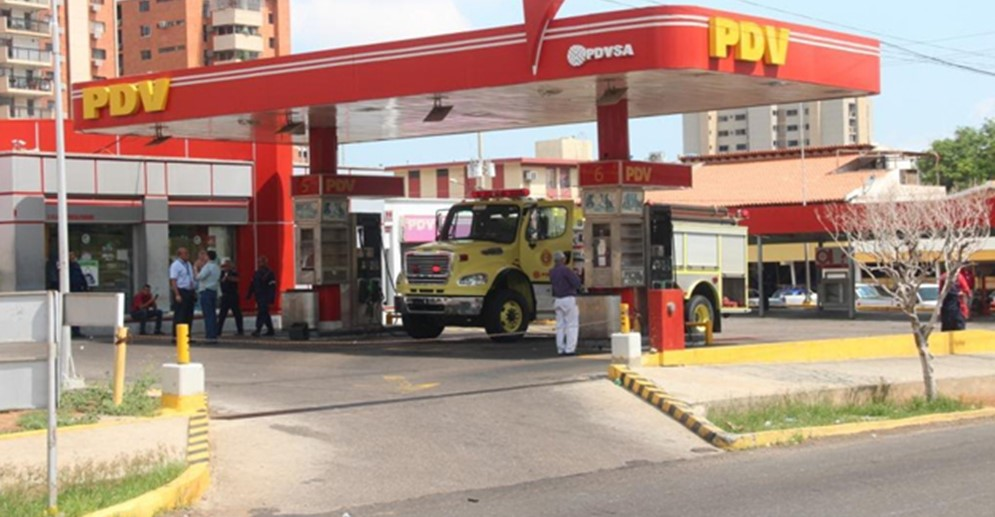

| nombre | Direción | ||
|---|---|---|---|
| Servi Centro La Gran Parada | Calle Monagas | visitar | |
| Estación de Servicios San José C.A. | Sector Club de Leones Carretera Nacional Carúpano-Cumaná | visitar | |
| Inversiones Realza C.A | Calle Libertad con Calle Monagas frente a la oficina Zoom. | visitar | |
| Estación de servicios Bello Monte C.A. | Av.iniversitaria Sector Bello Monte. | visitar | |
| Estación de Servicios El Mangle C.A. | Av. Universitaria Sector El Mangle frente a la clínica Bello Monte. | visitar | |
| Retiz C.A | Calle Juncal frente a multitel | visitar | |
| Servi centros Los Molinos C.A. | Av.Universitaria Sector Los Molinos | visitar | |
| Estación de Servicios Las Ponías C.A | Carretera Nacional Carúpano-Cumaná Las Ponías | visitar | |
| Inversiones Playa Grande C.A | Carretera Nacional Sector Playa Grande | visitar |